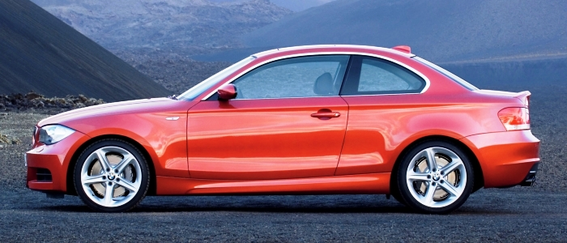

Купе́ (від фр. coupé — «різаний», «вирізаний») — тип кузова легкового автомобіля з двома або чотирма дверима та двома чи чотирма сидіннями. Зазвичай, купе — спортивніший варіант седана.
| Назва | BMW M4 | Audi RS5 |
| об’єм двигуна | 3.0л(BMW M TwinPower Turbo ), 510 к.с | 4.2л(V6), 450 к.с |
| Розхід палива на 100км | 5.4 л | 10.8 л |
Вперше, даний термін з'явився в 19 ст., коли ним почали ідентифікувати транспортні засоби, в яких задні, обернені протилежно напрямку руху сидіння було виключено з конструкції, тобто вирізано